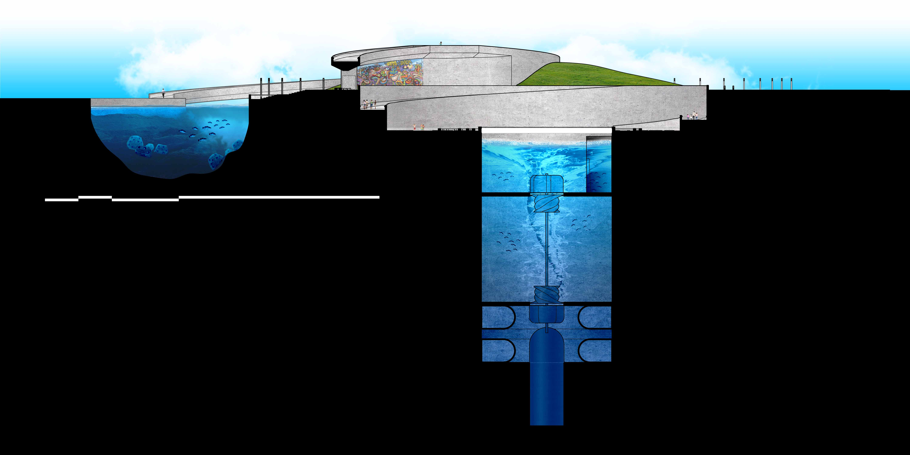
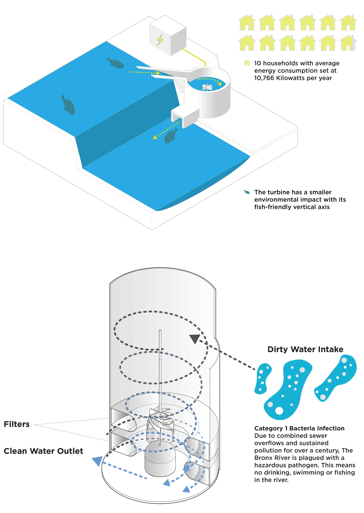
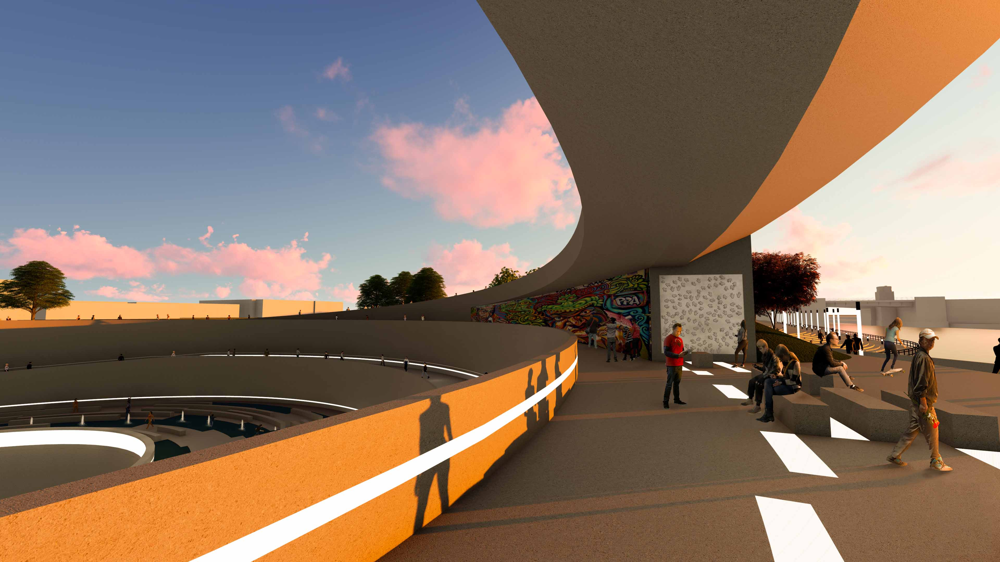
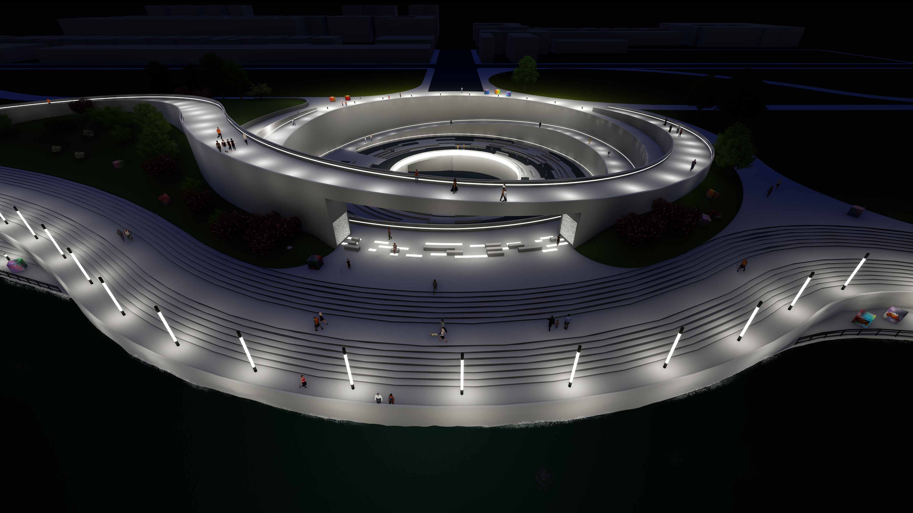

Design for Energy
Through the vertical axis hydroelectric turbine, the Vortex would capably provide electricity for the adjacent sites and over one-hundred of the surrounding neighborhood’s houses. The excess energy generated by the vortex also provides for all the required energy needs related to heating the bridge during cold weather, the Concrete Plant Park lighting features, and the pumps required for the site’s water features, play areas, and filtration systems. The Vortex’s turbine assembly includes a filtration system which, in addition to being fish-friendly, removes harmful bacteria from the river. The cascading water funnels into the vortex through a large aperture. Once within the apparatus, the turbine peels momentous energy from the water turning it into usable energy (wattage) to service the site, the neighborhoods that bound the site, and beyond to the adjacent cityscape.
Design for Innovation
While there are larger scale turbines in development at this time that also operate according to the project specifications such as the one designed by Turbulent, upon completion, the Vortex with its long span trough and eighty-foot drop height will be the world’s most extensive and largest vertical axis turbine.
 Design for Land Use
To physically set the turbine element, the site will require excavation. The turbine’s excavation will yield a surplus of earthen material which the design then integrates as fill-based material on the site. One feature that will use this backfill material is the berm and terracing of the eastern bank. Using the earth in this manner will raise the eastern side of the river and protect the site and surrounding neighborhoods from the rising water levels. The Vortex will then pump any excess water into the adjacent floodplains to facilitate the site’s habitat reclamation areas. The Vortex bridge provides access to pedestrians and cyclists to the Concrete Plant Park. The bridge is more than 20-foot wide which enables the community to circumvent what is currently a 2-mile walk or ride to get to the other side of the park. The terracing of the east side provides a river walk that gives residents access to the river. The design of the bridge also addresses clearance issues that would have otherwise negatively impacted aquatic recreation such as boating, kayaking, and canoeing that presently occurs on the site.
Design for Health
The new and inviting landscape proposed by the project provides for a range of venues for on-site recreation. The flood zones stand as habitat rehabilitation zones. Adjacent play areas for children provide for learning and exercise. The removal of harmful toxins and bacteria in the water contributes to the overall health of the ecosystem.
Design for Materials
The use of concrete as a primary building material honors the industrial history of the concrete plant. Concrete also allows for the incorporation of many unique textures whose variation of use throughout the site enables the park patrons to engage with their senses especially, tactility, for example, board-forming or stamping.
Design for Culture
The design calls for the integration of selected concrete surfaces that act as blank canvases for local artists. The project also incorporates a distributed network of concrete cubes that disperse across the site enabling the display of murals and graffiti for permanent or temporary display enabling them to change over time. Access to the Bronx River also provides the community with new freedom to kayak and canoe with more ease, thus encouraging an active and healthy lifestyle and better stewardship of the environment.
Design for Reuse
The Vortex construction recycles the excavated earth and uses it for the site work. By design, the project balances cut-and-fill to sculpt the landscape into meaningful and intentional forms. The design also utilizes water from the Bronx River to create usable and renewable energy for the park and the surrounding neighborhood. The project also features new, humanmade marsh lowlands that serve as natural flood zones. These zones facilitate the Concrete Plant Park’s ongoing efforts to transform the landscape from a terrain vague urban landscape into a vibrant food-producing natural landscape.